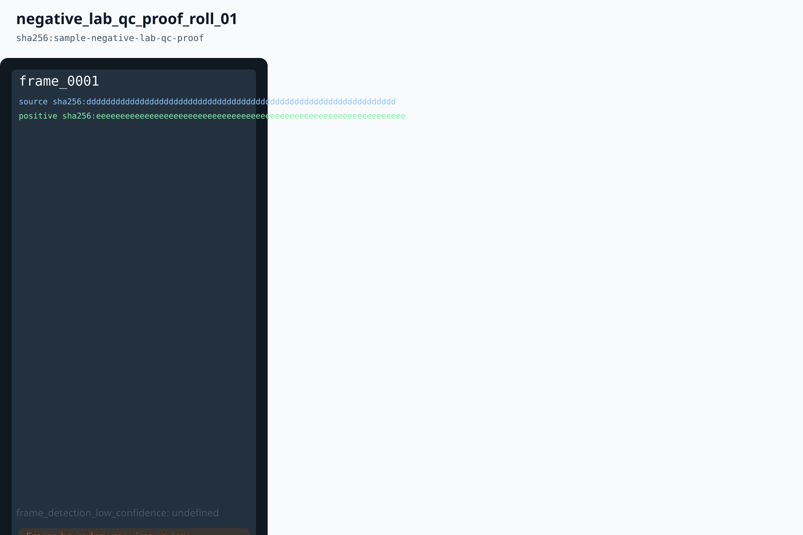

RawEngine Goal Review
This page is the durable local review surface for the long-running RawEngine implementation goal. It summarizes shipped work, validation evidence, design decisions, screenshots or render artifacts, skipped checks, and known gaps. The page should be updated as each feature PR lands.
Current Snapshot
Review Checklist
| Area | Status | Evidence | Gap |
|---|---|---|---|
| CI quality gate | Started | Baseline validation workflow, aggregate required gate, dependency security/license checks, actionlint, pinned action audit, unsafe-cast ban, docs checks, and macOS smoke routing. | Continue reducing known baseline wrappers and runner latency. |
| API and command policy | Documented | Developer API guide and command baseline docs. | Command schemas, generated artifacts, replay harness, and bridge adapters still need implementation. |
| Agent boundary | Runtime handoff proof | Sample agent guide and planned app-server tool policy, plus agent replay proof gallery, expert edit demo workflow, and the before/after handoff UI smoke. | Full expert-agent planning, live tool invocation, and broader rendered screenshots remain future work. |
| Telemetry consent | Documented | Telemetry opt-in decision | Runtime telemetry remains disabled by default until explicit consent UX and schemas land. |
| Sidecar validation | Artifact proof |
bun run check:sidecar-roundtrip validates sidecar fixture semantics for AI provenance, HDR,
panorama, focus-stack, super-resolution, and Negative Lab artifacts.
|
Rust-side sidecar integration and migration tests are not complete. |
| User-visible UI features | In progress | Visual-smoke scenarios now cover HDR, panorama, focus stack, super-resolution, film look browser, Negative Lab workspace, color workflow, and library/editor shells. | Most computational-photo paths remain UI/API/dry-run or synthetic-smoke only, not final E2E apply. |
| Image-processing proof | Synthetic proof | Runtime apply checks now render synthetic HDR, panorama, focus stack, and super-resolution outputs with app-server/UI bridge coverage, output-derived artifact hashes, and quality provenance for HDR/SR/focus plus panorama quality metrics. | Real RAW before/after proof and export parity remain required before feature completion. |
| RAW open/edit/export proof | Private RAW report gate |
bun run check:raw-open-edit-export-proof and
bun run check:raw-open-edit-export-run-reports validate manifest-only public schema and
fail closed before a proof can be marked accepted without private artifact hashes and run reports.
|
Actual private RAW open, typed edit command, preview/export, sidecar reload, and pixel-delta proof. |
Capability Status Buckets
These buckets prevent the review page from treating planning, schema, bridge, runtime, and UI proof as the same level of completion.
| Status | Example area | Evidence | Meaning |
|---|---|---|---|
| plan-only | Final review page | docs/validation/goal-review-2026-06-11.html |
Tracked in the roadmap/review surface, but not proof of product runtime behavior. |
| schema-only | RAW open/edit/export ledger | docs/validation/raw-open-edit-export-runtime-status-2026-06-18.json |
Contracts and ledgers exist, but accepted private RAW run reports are still required. |
| dry-run-only | Computational app-server bridges | docs/validation/computational-merge-runtime-status-2026-06-18.json |
Tool/bridge path is checked without claiming final image-quality or UI walkthrough proof. |
| runtime apply-capable | HDR/panorama/focus/SR synthetic outputs | bun run check:computational-merge-runtime-status |
Executable runtime path produces artifacts, with real RAW and visual QA gaps tracked separately. |
| UI E2E-proven | Negative Lab QC contact sheet | docs/validation/negative-lab-qc-contact-sheet-proof-2026-06-16.svg |
Committed user-visible feature artifact; feature UIs still need their own runtime proof. |
User-Visible Feature Proofs
| Feature | Status | Evidence | Remaining proof |
|---|---|---|---|
| HDR merge workspace | Runtime apply proof |
PRs #1586, #1592, and #1598, bun run check:hdr-runtime-plan-smoke,
bun run check:hdr-app-server-runtime, bun run check:hdr-ui-runtime-bridge.
Runtime smoke records clipping, motion pixels, and synthetic reconstruction MAE.
|
Real bracket merge, preview/export parity, tone mapping, and deghost quality gates. |
| Panorama workspace | Runtime apply proof |
PRs #1588, #1590, and #1805, bun run check:panorama-runtime-plan-smoke,
bun run check:panorama-app-server-runtime,
bun run check:panorama-ui-runtime-bridge. Runtime smoke records crop coverage, overlap
area, output/source pixels, and stitched-source ratio.
|
Production seam search, projection engines, tiling path, and real photo validation. |
| Focus stack workspace | Runtime apply proof |
PRs #1587, #1591, #1599, #1805, and #1806,
bun run check:focus-runtime-plan-smoke,
bun run check:focus-app-server-runtime, bun run check:focus-ui-runtime-bridge,
and bun run check:sidecar-roundtrip. Runtime smoke records alignment, source coverage,
winning confidence, low-confidence area, retouch recommendation, and persisted sharpness settings.
|
Depth-map/laplacian production blending, halo controls, and RAW fixture proof. |
| Super-resolution workspace | Runtime apply proof |
PRs #1589 and #1597, bun run check:sr-runtime-plan-smoke,
bun run check:sr-app-server-runtime, bun run check:sr-ui-runtime-bridge.
Runtime smoke records confidence-map coverage, detail quality, frame registrations, and improvement
ratio.
|
Model/optical-flow SR, artifact quality review, and real burst RAW validation. |
| Layers and masks | Runtime/UI proof |
bun run check:layer-stack-ui-proof,
bun run check:layer-visibility-opacity-proof,
bun run check:brush-mask-canvas-ui-proof, and
bun run check:layer-mask-real-raw-proof cover stack UI operations, visibility/opacity,
canvas brush output, and private ARW mask-refinement metrics without publishing private pixels.
|
Blend-mode breadth, group workflows, and broader real RAW layer stack coverage. |
| Color workflow | UI proof |
bun run check:color-workflow-smoke,
bun run check:professional-color-workflow-private-proof, and color style preset/fixture
checks.
|
Capture One-class color parity, skin-tone runtime, profile/input transform proof. |
| Expert agent handoff | Runtime/UI proof |
bun run check:agent-chat-ui, bun run check:agent-expert-edit-demo-workflow,
bun run check:agent-app-server-raw-edit-proof, and
expert edit demo workflow validate a
Zod-backed before/after handoff with approved dry-run, proof gallery link, audit artifact, and rollback
target.
|
Live app-server agent planning, real user prompt flow, and richer before/after screenshots. |
| Film and Negative Lab | UI/fixture proof |
bun run check:film-look-browser-smoke,
bun run check:negative-lab-workspace-smoke, Negative Lab fixture checks, PR #1606,
bun run check:negative-lab-workspace, and
bun run check:negative-lab-app-server-routes. The workspace now exposes a QC proof report
backed by Zod schema validation and app-server route coverage.
|
Major stock preset expansion, real scan processing, pixel retouch, contact-sheet export, and export parity. |
Artifacts
Current Render Baseline
Existing committed screenshot artifact from the render baseline. It records a known current limitation rather than a polished UI proof.
Committed Negative Lab QC Proof

This committed proof keeps the review page self-contained in clean checkouts. Run
bun run check:visual-smoke to refresh local screenshots under
artifacts/visual-smoke/; those generated screenshots remain ignored and are listed below
until promoted into committed review artifacts.
Brush Mask Canvas Proof
Brush mask canvas UI proof records a drag-to-output path with paint mask coverage, command IDs, and bounded runtime output evidence.
Layer Stack Proofs
Layer stack UI proof and visibility/opacity proof document visible layer state, operation coverage, and export-parity handoff status.
Color And RAW Proofs
Professional color private RAW proof and skin-tone uniformity proof keep local RAW validation visible without committing private image artifacts.
Expert Agent Handoff Proof
Expert edit demo workflow and agent replay proof gallery document the before/after artifact IDs, accepted app-server dry-run, virtual-copy apply, audit link, and rollback target used by the visible agent handoff.
Design Decisions To Track
| Decision | Current Direction | Evidence |
|---|---|---|
| Schema source of truth | Zod-authored TypeScript-facing schemas with Rust parity tests or generated bindings. | Developer API guide |
| Agent safety boundary | App-server tools call typed commands, never raw Tauri invokes or UI automation. | Sample agent guide |
| Original file safety | Original RAW files are immutable; sidecars and derived artifacts carry edit state. | Privacy policy |
| CI latency | Docs/frontend-safe PRs should avoid scarce macOS runner jobs; native/build-risk PRs fail closed. | macOS smoke routing |
| Fixture governance | Real fixtures require source, license, hash, intended use, storage class, and privacy notes. | Fixture download policy and public fixture manifest |
| Crash and error reporting | Local-first diagnostics with explicit future crash-reporting consent gates. | Crash and error reporting strategy |
| Telemetry | Product telemetry stays off by default; any future collection requires explicit opt-in. | Telemetry opt-in decision |
Validation Evidence Ledger
Human review page: docs/validation/goal-review-2026-06-11.html. This page is a review artifact,
not a routine product validation gate.
| Validation | Current command or check | Use |
|---|---|---|
| Docs | bun run docs:check |
Markdown formatting and internal markdown link checks. |
| Workflow syntax | bun run check:actions |
GitHub Actions syntax through actionlint. |
| Action pins | bun run check:action-pins |
Ensures workflow actions remain pinned and annotated. |
| Changed-path routing | bun run check:ci-paths |
Self-test for macOS smoke routing decisions. |
| Unsafe casts | bun run check:unsafe-casts |
Bans unsafe TypeScript cast escape hatches such as as unknown as. |
| HDR runtime apply | bun run check:hdr-runtime-plan-smoke |
Synthetic aligned HDR render, deghost mask, app-server bridge, output artifact hash, clipping ratio, motion-pixel count, and reconstruction-MAE proof. |
| HDR private RAW asset prep |
bun run prepare:computational-private-rootbun run check:computational-private-root-assetsbun run prepare:hdr-real-raw-private-rootbun run check:hdr-real-raw-private-proofbun run prepare:focus-real-raw-private-rootbun run prepare:sr-real-raw-private-rootbun run prepare:panorama-real-raw-private-root
|
Aggregate computational private root prep creates all HDR ARW, focus CR3, SR NEF, and panorama RAF source slots without committing private pixels. The aggregate asset gate intentionally fails until each source set exists. The HDR runner orchestrates the env-gated Rust decode proof plus private report collection, and skips explicitly until a private root is configured. |
| Focus private RAW asset prep |
bun run check:focus-real-raw-private-root-prepbun run check:focus-real-raw-private-proof
|
Self-test for focus-stack private root validation and path-safety behavior plus a skip-safe private proof runner wired through focus runtime, app-server, and UI bridge checks. |
| Super-resolution private RAW asset prep |
bun run check:sr-real-raw-private-root-prepbun run check:sr-real-raw-private-proof
|
Self-test for SR burst private root validation and path-safety behavior plus a skip-safe private proof runner wired through SR runtime, app-server, and UI bridge checks. |
| Panorama private RAW asset prep |
bun run check:panorama-real-raw-private-root-prepbun run check:panorama-real-raw-private-proof
|
Self-test for panorama overlap private root validation and path-safety behavior plus a skip-safe private proof runner wired through panorama runtime, app-server, and UI bridge checks. |
| Panorama runtime apply | bun run check:panorama-runtime-plan-smoke |
Synthetic stitch output, durable artifact hash, stitch setting provenance, crop/overlap quality metrics, and app-server bridge proof. |
| Panorama E2E slices |
bun run check:panorama-seam-exposure-proofbun run check:panorama-projection-memory-proof
|
Seam/exposure thresholds, projection metadata, and proxy memory budgets for #1929/#1930. |
| Focus runtime apply | bun run check:focus-runtime-plan-smoke |
Weighted-sharpness output, depth/sharpness/retouch artifact hashes, alignment/source coverage, quality metrics, and app-server bridge proof. |
| Focus E2E slices |
bun run check:focus-alignment-sharpness-proofbun run check:focus-blend-halo-proof
|
Alignment/sharpness and blend/halo artifact gates for #1938/#1939. |
| Super-resolution runtime apply | bun run check:sr-runtime-plan-smoke |
Pixel-shift render, frame registrations, confidence artifact hash, confidence-map coverage, detail quality, and improvement-ratio proof. |
| Super-resolution E2E slices |
bun run check:sr-alignment-detail-proofbun run check:sr-artifact-performance-proof
|
Pixel-shift detail deltas, artifact hashes, runtime budget, and proxy peak memory for #1940/#1941. |
| RAW open/edit/export manifest | bun run check:raw-open-edit-export-proof |
Private RAW ledger linkage, immutable source intent, workflow steps, and artifact slots. |
| RAW open/edit/export reports | bun run check:raw-open-edit-export-run-reports |
Public-schema run-report gate; accepted private proof requires non-null hashes and private run reports. |
| Expert agent handoff |
bun run check:agent-chat-uibun run check:agent-expert-edit-demo-workflowbun run check:agent-app-server-raw-edit-proof
|
Browser/UI smoke and app-server replay proof for the before/after review handoff, approved dry-run, proof gallery link, audit artifact, and rollback target. |
| Computational merge runtime status | bun run check:computational-merge-runtime-status |
Tracks HDR, panorama, focus stack, and super-resolution proof maturity and keeps manifest-only cases distinct from private runtime reports. |
| Sidecar fixture | bun run check:sidecar-roundtrip |
Validates `.rrdata` fixture semantics for current derived artifact and AI provenance families. |
Missing Artifacts
- Feature UI screenshots for new app-visible controls.
- Before/after renders for editing features.
- Golden image outputs and perceptual comparison reports.
- Live OpenAI app-server agent prompt walkthrough screenshots beyond the committed replay demo.
- Negative Lab real-scan workflow screenshots and QC overlays.
-
HDR private ARW bracket files for
private-fixtures/hdr/bracket-alignment-v1/; the proof runner is wired, but no private run report exists yet. - Focus CR3, super-resolution NEF, and panorama RAF private source files for the computational E2E proof slots.
- Panorama, focus stack, and super-resolution real-image runtime reports.
- Accessibility and high-DPI UI screenshots.